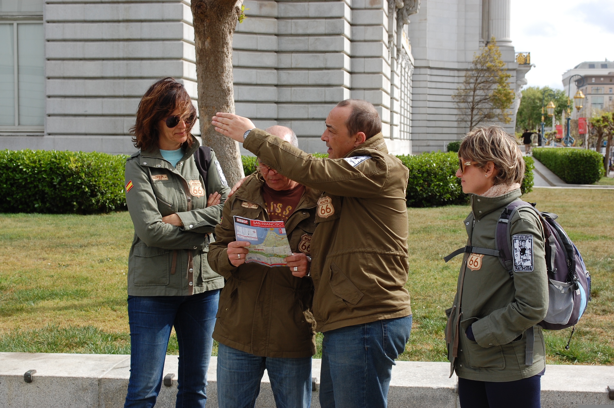

Nosotros
Nacimos en la estación, no en una oficina
Somos un equipo de guías y vecinos de Alausí que decidió profesionalizar lo que ya hacía por afición: mostrar el cantón a quienes llegan en el tren.
Historia
De guías informales a agencia comunitaria
Alausí Vive nació en 2016, cuando un grupo de guías locales empezó a recibir a los pasajeros del tren de la Nariz del Diablo con recorridos improvisados por el centro histórico. Con el tiempo sumamos a la comunidad de Nizag y a guías del páramo de Puñay, hasta convertirnos en una agencia que representa a todo el cantón.
Hoy trabajamos con familias anfitrionas, artesanas y transportistas locales, procurando que cada recorrido deje beneficio directo en Alausí.

2016
Primeros recorridos informales en la estación de tren.
2019
Alianza con la comunidad de Nizag para tours culturales.
2022
Apertura de la ruta de trekking al Cerro Puñay.
Hoy
Agencia formal con seis rutas activas en todo el cantón.
Lo que nos guía
Misión, visión y valores
Misión
Dar a conocer el patrimonio natural, ferroviario y cultural de Alausí mediante recorridos guiados que generen ingresos justos para las comunidades locales.
Visión
Ser la agencia de referencia del turismo comunitario en Chimborazo, reconocida por la calidad de sus guías y el respeto a las tradiciones locales.
Respeto
Por las comunidades, sus tiempos y sus tradiciones.
Autenticidad
Información real, sin exagerar ni inventar el destino.
Sostenibilidad
Grupos pequeños y cuidado del entorno andino.
Cercanía
Guías del propio cantón que conocen cada camino.
Por qué visitar Alausí
Razones para venir
La Nariz del Diablo es una de las pocas obras ferroviarias en zigzag que aún se recorre en tren.
El centro histórico conserva su trazado y fachadas casi intactas desde hace un siglo.
Nizag ofrece un acercamiento directo a la cultura kichwa, sin intermediarios.
El páramo de Puñay combina arqueología y paisaje en una sola caminata.
Dato adicional
Cómo llegar
Alausí está a unas 3 horas por carretera desde Riobamba y a unas 4 horas desde Cuenca. El cantón cuenta con terminal terrestre propio, y la estación de tren funciona como punto de llegada para buena parte de los visitantes.
El clima andino es fresco todo el año, entre 8°C y 19°C: se recomienda ropa de abrigo para las mañanas y las noches.